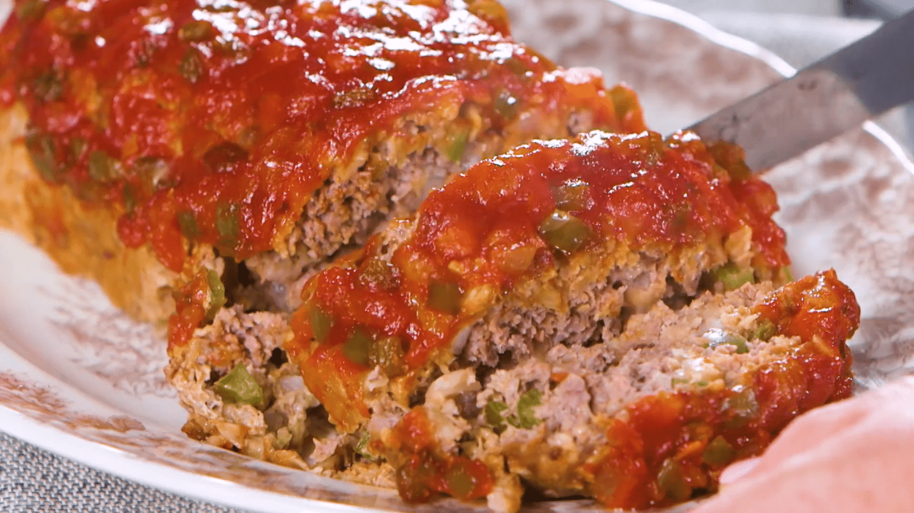

Meatloaf

Description
This is a country-fied, downhome meatloaf recipe I found on the internet with a blend of familiar flavors in most american households, topped with ketchup.
Ingredients
- 2 lbs ground, no more than 90% lean
- 1 med onion, finely chopped
- 2 large eggs
- 3 garlic cloves, minced
- 3 Tbsp of ketchup
- 3 Tbsp of fresh parsley, finely chopped
- 3/4 cup of panko breadcrumbs
- 1/3 cup of milk
- 1 tbsp of salt or to your taste
- 1 ½ tbsp of italian seasoning
- 1/4 tbsp of ground black pepper
- 1/2 tbsp of ground paprika
Meatloaf Sauce Ingredients
- 3/4 cup of ketchup
- 1 ½ tbsp of white vinegar
- 2 ½ tbsp brown sugar
- 1 tbsp of garlic powder
- 1/2 tbsp of onion powder
- 1/4 tbsp of ground black pepper
- 1/4 tbsp of salt
Steps
- Preheat oven to 375F or 190 C
- Mix all of the ingredients for the meatloaf in a large bowl
- Add the meatloaf to a loaf pan, gently pressing the meat down to a nice even shape. Presentation is key!
- Bake for 40 minutes at 375F
- While the meatloaf is baking, now is a good time to make the sauce, mix all the ingredients for the sauce.
- Spread the sauce over the meatloaf and back an additional 15-20 minutes, ensuring the internal temp is 160F
- Rest the meatloaf for 10 minutes before cutting, this can help the loaf absorb some of the juices back into the mix
- Enjoy!
Return to main page